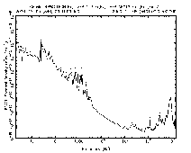

Cassini RPWS
Calibrated Spectrum Web Form

LFDR
27Hz
2.5KHz
Ex
Ez
Bx
By
Bz
LMR+
LMR-
LPs
MFR
One
Two
Three
Ex
Ez
Bx
Bz
HFR
A
B
C
HF1
HF2
Ex+
Ex-
Ex+/-
Ez
time range:
to
frequency range:
Hz
to
Hz
amplitude range:
V
2
m
-2
Hz
-1
to
V
2
m
-2
Hz
-1
data set:
cassini/rpws/raj/RPWSspec
plot title:
Select the primary receiver for the given bandwidth
Average
MFR 3
HFR A
Average
HFR C
HFR HF1
Filter HF1 Power Supply Noise
Antenna Resonance Adjust
output:
GIF as
application/x-das-gif
image/gif
application/octet-stream
PS as
application/x-das-eps
application/postscript
application/octet-stream
Text file as
text/plain
application/octet-stream